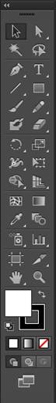
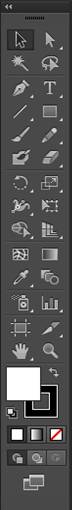
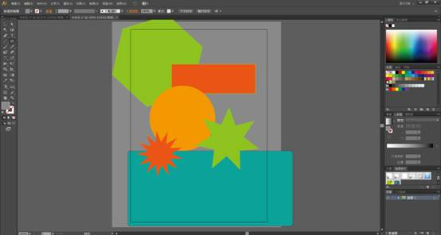
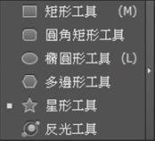
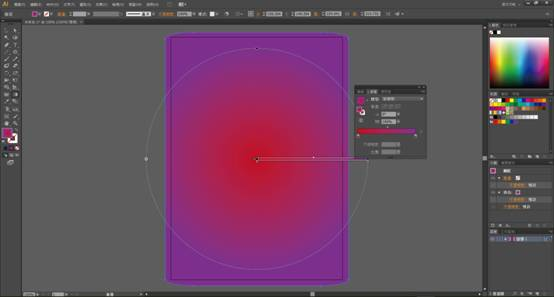
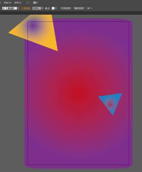
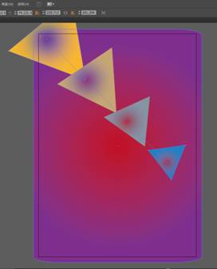

Adobe illustrator 是一套向量繪圖軟體，可以運用在插畫、海報、型錄、書籍、網頁、視訊等視覺設計，不管怎麼修改圖形，都可以維持乾淨俐落的邊緣及線條。

a.控制面板：用於調整物件及預覽畫面。
b.工具面板（工具箱）：提供各種繪圖與編輯工具。
c.面板群組：調整色票、漸層、筆畫、透明度等屬性面板，可依個人需求添加或調整位置。
d.功能表：提供主要操作指令，像是檔案存取、編輯、濾鏡、偏好設定等。
-檔案>>新增（Ctrl+N）


 



選取物件、移動、調整大小的工具，按住Shift使用，可選取多個物件
可選取編輯錨點，用於修改物件造型。
是用於移動物件和調整物件大小的，那旋轉工具就是來旋轉他們本體的無誤(ˋˇˊ)。
建立文字方塊，然後盡情打字吧。注意:存檔前須記得將文字轉外框喔!!（選取→文字>>建立外框）
可自由選擇創造各種形狀。（形狀們爆射中~~）
-按住Shift使用可以拉出正方形。
-按住Shift使用可以拉出圓角正方形。
-按住Shift使用可以拉出圓形。
-按【上】【下】鍵可增減邊邊角角數目。
-按【上】【下】鍵可增減角角數目。
把喜歡的顏色塞進漸層面板中，就可以自由製作自己喜歡的漸層。
在多個物件間創建一系列漸變顏色或形狀的工具。
 用於放大、縮小圖稿。
-點擊滑鼠左鍵。
-拖曳滑鼠框出想要放大檢視的範圍。
-按住Alt點及滑鼠左鍵。
-按住Alt滾動滑鼠滾輪，即使沒有使用放大鏡工具也能進行縮放。
在任何地方點一下，取樣顏色，可以用來取樣還沒向量化的顏色範本。

現在，可以用這些多采多姿的小工具創作屬於自己的每每作品嘍!!